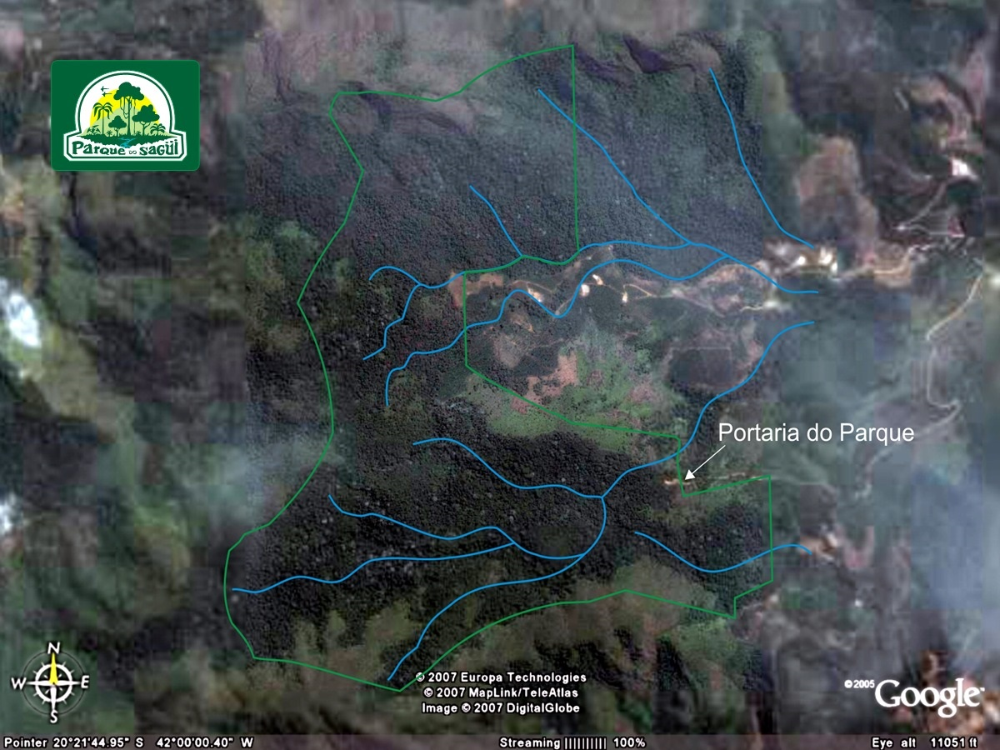
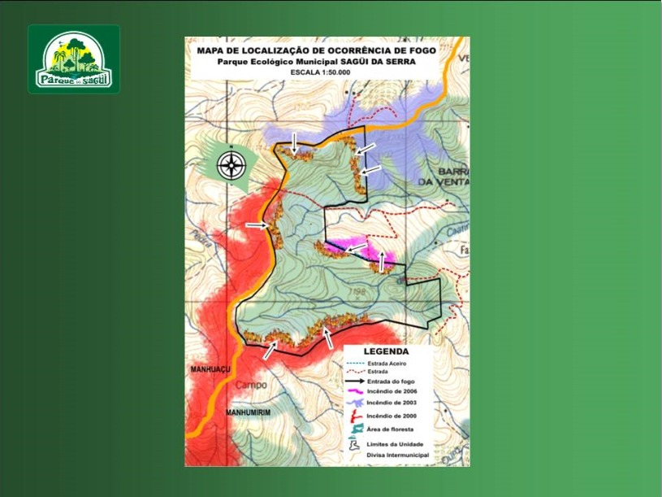

Projeto Guardião Ambiental
Sistema Inteligente de Prevenção de Queimadas
As queimadas em Minas Gerais deixaram de ser apenas um problema sazonal e passaram a representar uma grande ameaça ambiental e social. O clima seco, as altas temperaturas e os ventos fortes favorecem a propagação do fogo, principalmente entre os meses de julho e outubro. Porém, a principal causa dos incêndios continua sendo a ação humana, responsável pela maior parte dos casos registrados no estado. Entre os motivos mais comuns estão o uso inadequado do fogo na agricultura, a limpeza de pastagens e ações criminosas ou irresponsáveis em áreas urbanas e rurais. Em 2024, Minas Gerais registrou mais de 24 mil ocorrências de incêndios, o maior número da série histórica, mostrando a gravidade da situação. Além da destruição da vegetação nativa, as queimadas causam impactos diretos na biodiversidade, na qualidade do ar e na saúde da população. A fumaça libera poluentes que prejudicam principalmente crianças, idosos e pessoas com problemas respiratórios. O fogo também ameaça animais silvestres, fontes de água e contribui para a erosão do solo. Nos últimos 40 anos, cerca de 17% do território mineiro já foi atingido por incêndios ao menos uma vez. Diante desse cenário, o uso de tecnologias como sensores de alerta a queimadas se torna fundamental para identificar focos de incêndio rapidamente, emitir alertas para a população e auxiliar equipes de combate antes que o fogo se espalhe.

Nossa Resposta
Diante desse contexto, o projeto proposto — monitorar florestas e pastagens por meio de um termômetro que detecta elevação brusca de temperatura — mostra-se plenamente alinhado às necessidades apontadas pelas pesquisas. O grupo decidiu focar também na região próxima a nós, especialmente no Parque do Sagui, devido à importância da fauna local. A presença de espécies nativas e muitas vezes ameaçadas torna essa área prioritária para a prevenção de queimadas, pois um incêndio na região poderia causar perda irreparável da biodiversidade ali existente. O sensor de alerta a queimadas tem como objetivo monitorar áreas de risco e identificar aumentos anormais de temperatura e fumaça em tempo real. Quando o sensor detecta sinais de incêndio, ele envia alertas imediatos para um aplicativo ou sistema conectado, permitindo que moradores, brigadas de incêndio e autoridades ajam rapidamente. Essa tecnologia ajuda a reduzir danos ambientais, proteger a fauna e diminuir os riscos para as pessoas que vivem próximas às áreas afetadas. Em locais de preservação ambiental, como parques e reservas naturais, o sistema pode ser essencial para evitar incêndios de grandes proporções. Além da prevenção, o uso do sensor também contribui para a conscientização ambiental e para a segurança da população. O sistema pode emitir notificações sonoras, vibrações e mensagens de emergência informando sobre o perigo e orientando os usuários sobre como agir. Em Minas Gerais, onde a quantidade de queimadas cresce a cada ano, soluções tecnológicas como essa podem auxiliar no monitoramento constante das áreas vulneráveis e no combate rápido aos focos de incêndio. Dessa forma, o projeto une tecnologia, sustentabilidade e proteção ambiental para ajudar no enfrentamento de um dos maiores problemas ambientais do estado.

Funcionamento
O projeto desenvolvido pelo grupo tem como objetivo monitorar áreas de florestas e pastagens para evitar queimadas, com foco inicial na região próxima a nós, especialmente no Parque do Sagui. O funcionamento do sistema é baseado na instalação estratégica de sensor em pontos de risco dentro e no entorno do parque. Esses sensor são programados para monitorar continuamente a temperatura ambiente. Quando ocorre uma elevação brusca e atípica da temperatura — característica do início de um incêndio — o sistema interpreta esse aumento como um indicativo de fogo. Imediatamente, um sinal de alerta é emitido automaticamente para o aplicativo contendo informações como a umidade exata e a temperatura em tempo real. A detecção precoce e o acionamento imediato dos civils podem reduzir significativamente o tempo de resposta, complementar o monitoramento por satélite e atuar de forma preventiva, protegendo tanto a vegetação quanto os animais que dependem desse ambiente. Dessa forma, o projeto alia tecnologia simples e eficaz à proteção ambiental, atuando de forma preventiva e contribuindo diretamente para a redução das queimadas, a preservação do Parque do Sagui, a proteção da fauna local e a segurança da população do entorno. Portanto, o projeto não se limita a uma ideia teórica: trata-se de uma solução viável, de baixo custo e com grande potencial de aplicação prática na realidade do nosso entorno. Ao unir tecnologia acessível à conscientização sobre os riscos das queimadas, o grupo acredita que é possível agir antes da tragédia, e não depois dela. Proteger o Parque do Sagui e sua fauna é proteger um patrimônio que pertence a toda a comunidade. Com o monitoramento contínuo e o alerta imediato às autoridades, o fogo perde o tempo que precisa para se alastrar — e a vida ganha a chance de prevalecer. A inovação não precisa ser apenas uma palavra bonita – ela pode transformar realidades, e estamos certos de que o nosso projeto é um passo importante nessa direção.
Conclusão
A inovação não precisa ser apenas uma palavra bonita - ela pode transformar realidades, e estamos certos de que o nosso projeto é um passo importante nessa direção
